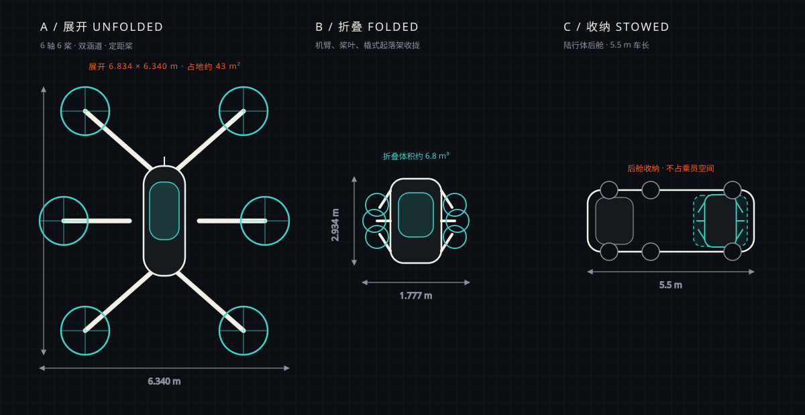
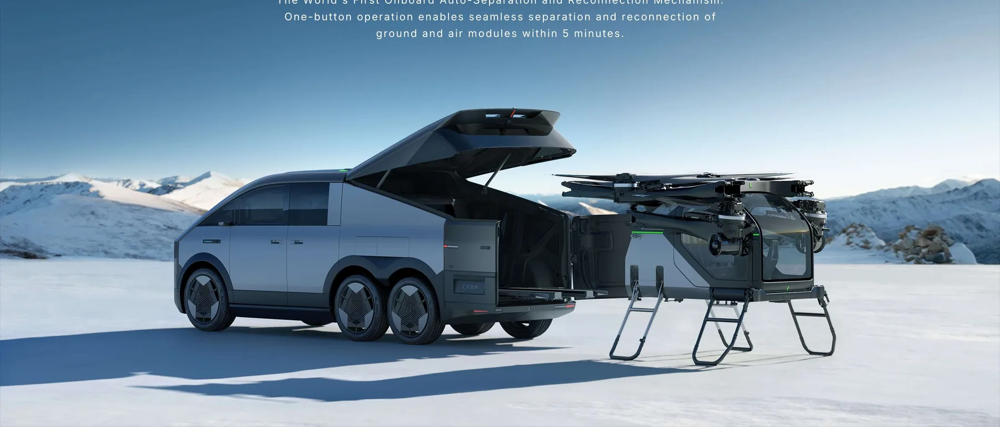
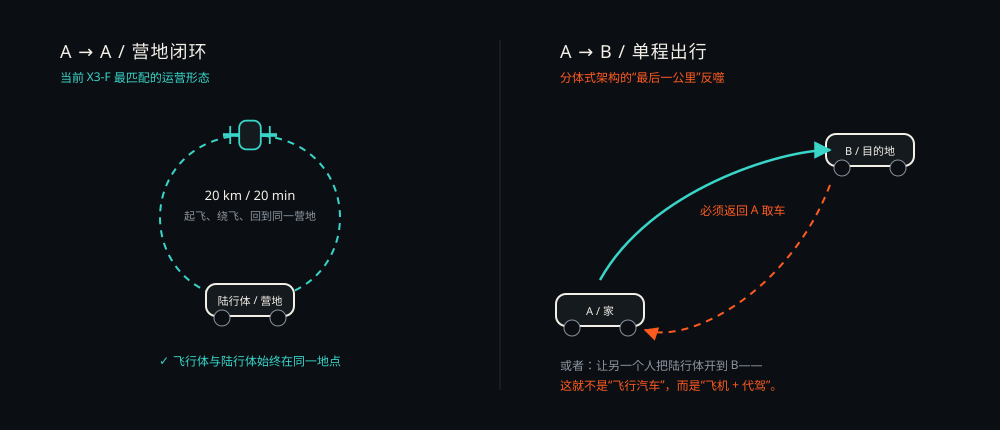
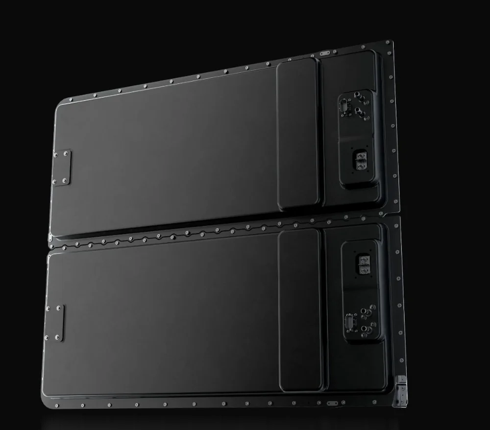
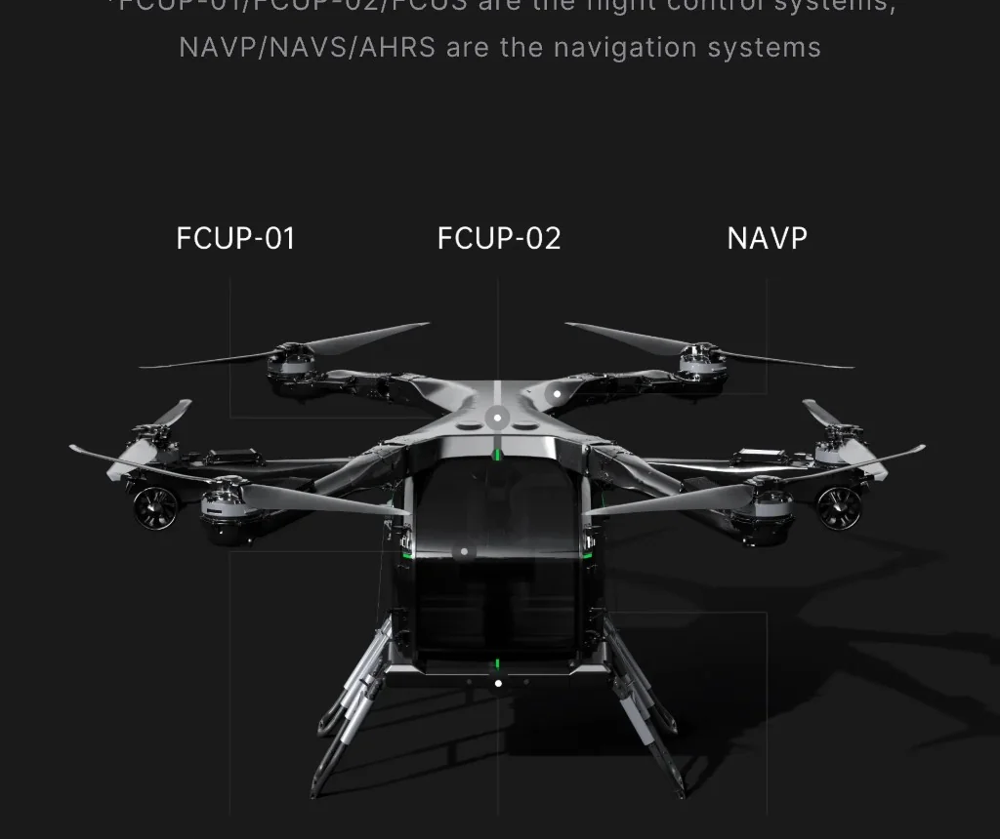
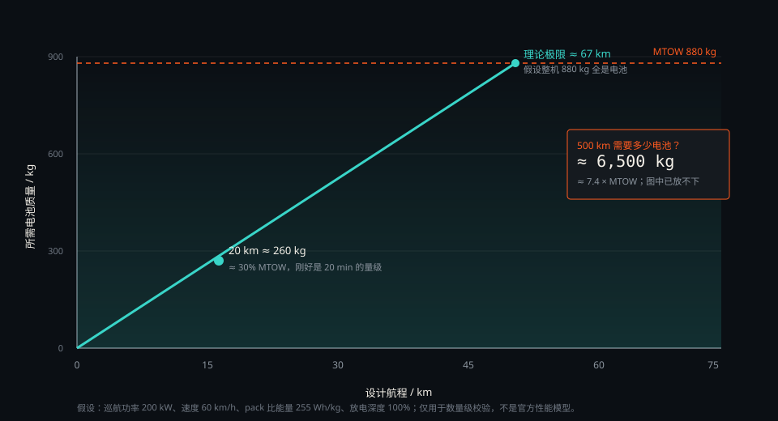
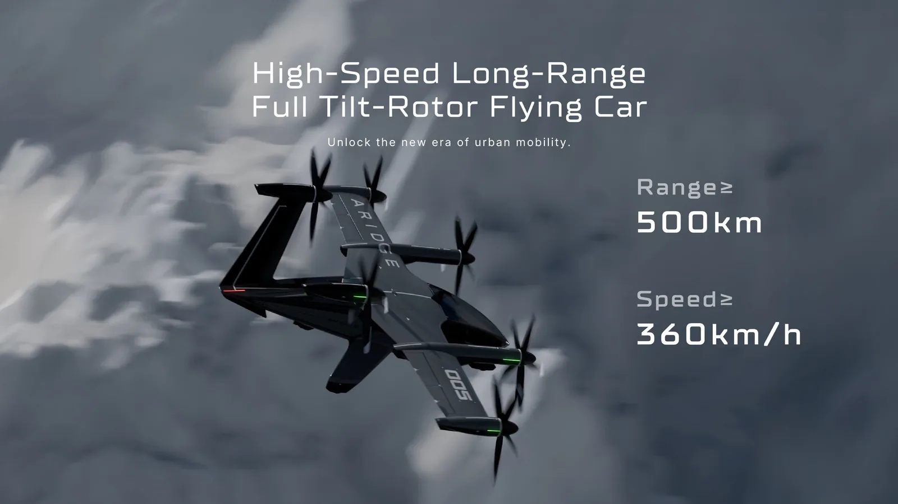
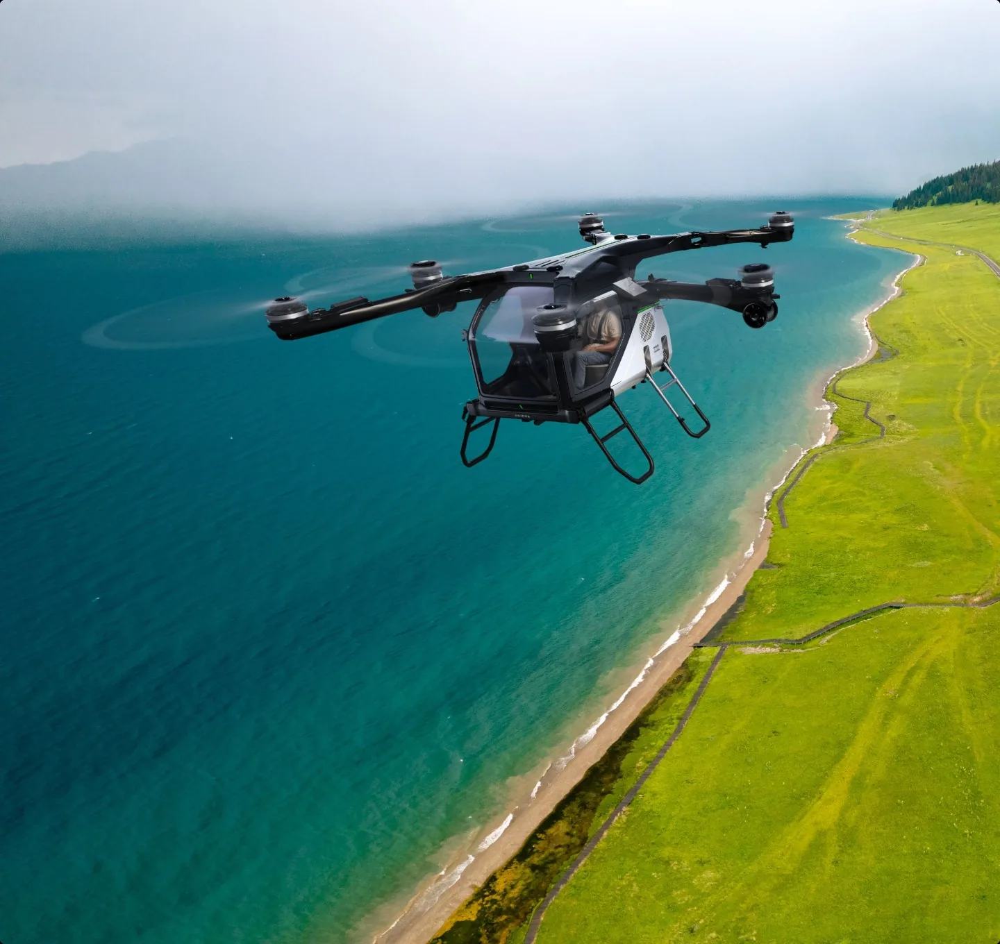
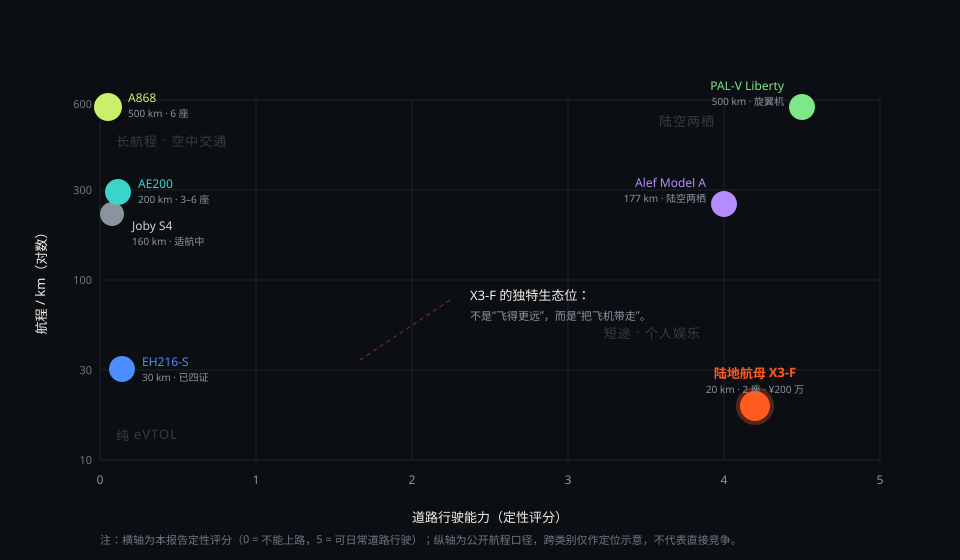

01 / 技术
7/10
在 20 公里内，工程自洽
880 kg、20 km、20 min、120 m 这组数字放在一起，是能相互解释的；但把航程拉到 500 km，需要的电池约为整机重量的 7 倍。物理不答应。
飞行汽车技术基础 · 课程作业 / CASE STUDY 02
EVIDENCE CUT-OFF2026.11.24
GUANGZHOU / RAS AL KHAIMAH
小鹏汇天「陆地航母」的全方位调研与可行性分析
一辆 6×6 的移动机库，一架能折叠的双人 eVTOL，以及一套把两者绑在 20 公里、120 米和“不得商业载客”里的监管现实。
† 880 kg 为专用条件基本参数，适用范围上限为 960 kg；20 km / 20 min / 120 m 是局方审定限制，不是营销口径。
EXECUTIVE SUMMARY
01 / 技术
880 kg、20 km、20 min、120 m 这组数字放在一起，是能相互解释的；但把航程拉到 500 km，需要的电池约为整机重量的 7 倍。物理不答应。
02 / 场景
私人娱乐、飞行培训、营地闭环最匹配；城市通勤、应急救援、商业载客都不匹配。分体式架构解决了“把飞机带走”，没有解决“把车也带走”。
03 / 市场
订单是真信号，但首批定金只占售价约 1%，且交付要以 TC / PC / AC 为前提。2026 是取证年，不是交付年；真正的收入曲线大概率要到 2027 年底–2028 年才成形。
它不是“会飞的车”，而是一套“把飞机带到风景里”的个人飞行系统。它的第一性原理是折叠与收纳，不是航程与速度。 本报告的核心判断 / THE THESIS
因为它把飞行汽车最容易被混淆的三件事，同时摆在了桌面上：工程上能不能做、监管上能不能飞、商业上有没有人买。很多产品只回答其中一个，陆地航母试图三个都回答。
它的聪明之处，是把“车”和“飞机”拆成两个独立取证的对象：陆行体按机动车管理，飞行体按轻型运动航空器（LSA）审定。这样可以用汽车供应链降本，用航空器路径取证，再用营地网络补足基础设施。
它的代价同样清楚：飞行体只有 20 公里、20 分钟、120 米，且不得商业载客；陆行体必须把飞机带到起飞点，再把它带回去。于是它天然适合“A→A”的营地闭环，而不适合“A→B”的通勤。
方法 01
把监管文件、企业口径、媒体报道和本报告测算分开，避免用一个漂亮数字掩盖另一个数字的缺口。
方法 02
用功率、能量、电池质量三件事，反推 20 km 与 500 km 哪一个在物理上成立。
方法 03
先看它申请的是哪一类证，再看这类证允许它做什么，最后才讨论市场能做多大。
方法 04
不把“万亿低空经济”乘一个市占率。用保守 / 基准 / 积极三种情景，标出假设与边界。
RESEARCH DESIGN / EVIDENCE
中国汽车工程学会在《飞行汽车发展报告 2.0》中把飞行汽车视为空地一体交通的组成部分，而不是单一车型；本报告沿用这一系统视角，把“车—机—营地—空域—监管”放在同一个分析框架里。[44]
不把企业口径当监管事实。“7000 台订单”“5 分钟分离”“6 副旋翼坏 2 副仍可飞”都来自企业披露，必须与民航局文件、第三方报道交叉核对。
不把意向订单当收入。订单、定金、确认销售、交付、确认收入是五个不同阶段。本报告会分别标注。
不把单点演示当体系成熟。一次载人飞行、一次海外交付，证明的是“某件事发生过”，不是“每天都能重复、每个人都能安全使用”。
在分析框架上，本报告借鉴 NASA 的城市空中交通成熟度（UML）量表：飞行汽车不是单一飞行器能力，而是运行、基础设施、社区接受与监管共同成熟的体系；安全部分则借用 ISO 26262 / 21448 的“风险—场景—验证”思路，而不是把标准名称当成认证结论。[45][46]
| 来源类别 | 本报告如何使用 | 关键限制 |
|---|---|---|
| 民航局文件 专用条件、CCAR-21、适航公告 | 确定类别、参数上限、运行限制、取证路径 | 公开的是 2025-03 征求意见稿，正式颁发版未公开；部分条款存在 880 / 960 kg 的口径差异 |
| 企业官方材料 ARIDGE 产品页、发布会、工厂开放日 | 理解设计意图、产品定义、产能与订单口径 | 属于企业自证；性能、可靠性、成本、交付时间均可能随项目状态调整 |
| 主流媒体 / 公告 新华社、明报、经济观察报、上市公司公告 | 交叉核验订单、融资、工厂、交付、事故 | 转述可能存在数字误差；同一事件不同媒体的时间、伤情、金额可能冲突 |
| 学术 / 标准 NASA UML、ISO 26262 / 21448、eVTOL 研究 | 提供成熟度、安全、场景评价框架 | 标准不是产品认证证书；框架用于组织问题，不替代工程验证 |
| 本报告测算 功率、能量、成本、情景 | 建立数量级判断与敏感性区间 | 不是官方性能模型或财务预测；假设变化会显著改变结果 |
表 1。证据来源与使用边界。完整来源见文末参考文献；关键说法的逐条审计见附录 A。
赵德力团队在东莞起步，早期以航模与飞行器研发为主。
何小鹏投资并共同成立，明确“让飞行更简单”的消费级飞行汽车路线。
申请类别为轻型运动航空器（LSA），民航中南局受理，进入适航审定。
第十五届中国航展，陆地航母完成公开载人飞行；同期开启预售与先飞通道。
双机编队预演后两机接触，一架着陆时起火；官方称现场人员安全，至今未见公开调查结论。
广州黄埔工厂 5 台飞行器同日下线并多机试飞；规划年产能 1 万台、满产 30 分钟/台。
订单口径超过 7,000 台；公司称计划年底开始量产交付，但适航证仍未取得。
交付的是试验用机，用于拉斯海马监管沙盒，不是终端消费者销售。
局方试飞完成、处于 TIA / 待颁阶段；最新官方口径为 2027 年年中启动量产交付。
时间线仅保留与“技术—监管—市场”判断直接相关的节点；融资、配色、品牌活动等未列入。
PRODUCT ANATOMY
陆行体是一辆可以日常驾驶的 6×6 增程车：车长 5.5 m、宽 2 m、高 2 m，四座，C1 驾照可驾驶，CLTC 综合续航超过 1,000 km，并能在行驶或驻车时为飞行体补能。它同时是运输车、机库和移动充电站。
飞行体 X3-F 是一架双人 eVTOL：六轴六桨、双涵道、定距桨，机臂、桨叶和橇式起落架可折叠，折叠后收纳进陆行体后舱。它按轻型运动航空器（LSA）取证，限昼间目视、私人娱乐与飞行培训，不得商业载客。
这两个对象各自遵循一套完全不同的法规、供应链和安全标准。把它们强行塞进“一辆车”的叙事里，会同时低估汽车的工程难度和航空器的监管难度。
公司层面，小鹏汇天前身汇天于 2013 年在东莞成立，2020 年与小鹏汽车共同成立现公司；2026 年 3 月完成近 2 亿美元融资，历史股权融资约 10 亿美元。2026 年 1 月有报道称其以保密方式向港交所递交 IPO 申请，公司未确认亦未否认；截至本报告证据截止日，未见上市记录。[8][48][49][50]
| 参数 | 官方 / 审定口径 | 本报告注释 |
|---|---|---|
| 类别 | 轻型运动航空器（LSA） | 不是正常类载客航空器；商业载客被明确排除 [1] |
| 最大起飞重量 | 880 kg（基本参数） 960 kg（适用范围上限） | 同一份专用条件出现两个数字，媒体常直接写 960 kg；本报告以 880 kg 做测算 [1] |
| 外形尺寸（展开） | 6,834 × 6,340 × 1,923 mm | 展开后占地约 43 m²，需要净空与隔离 |
| 外形尺寸（折叠） | 2,934 × 1,777 × 1,312 mm | 折叠体积约 6.8 m³，可进陆行体后舱 |
| 最大航程 | 20 km | 审定限制值，不是“最大能力”宣传值 |
| 最大航时 | 20 min | 与 20 km 在 60 km/h 量级上自洽 |
| 最大高度 | 120 m AGL / 2,500 m MSL | 典型低空体验高度；远离城市高层障碍 |
| 不可超越速度 | 72 km/h | 约为 20 m/s；不是 360 km/h |
| 座位 | 1 名驾驶员 + 最多 1 名乘客 | 双人座舱，270° 视野 |
| 运行条件 | 仅昼间目视（VFR） | 不能夜航、不能仪表飞行、不能入云 |
| 用途 | 私人娱乐、飞行培训；不得商业载客 | 这是商业模式的“硬天花板” [1][2] |
表 2。X3-F 关键参数。来源：中国民航局《X3-F 型航空器专用条件（征求意见稿）》，2025-03；尺寸与重量为设计参数，量产状态以企业公告为准。
| 参数 | 官方 / 企业口径 | 本报告注释 |
|---|---|---|
| 车型 | 三轴六轮、6×6 全轮驱动、后轮转向 | 不是传统 SUV；整备质量与油耗未公开 |
| 尺寸 | 约 5,500 × 2,000 × 2,000 mm | 车长略大于常见 5.3 m 标准车位，实际停放需验证 |
| 座位 | 4 座 | C1 驾照可驾驶；定位为日常用车 |
| 动力 | 800V 碳化硅增程平台 | 增程器为飞行体补能，解决营地充电难 |
| 综合续航 | > 1,000 km（CLTC） | 企业实验室口径；实际取决于载荷、路况、空调 |
| 补能能力 | 满油满电可为飞行体提供 5–6 次飞行 | 官方产品页口径；未披露电量与补能时间 [3] |
| 收纳 | 后舱容纳折叠飞行体，自动分合 | 企业称 5 分钟；亦有 2–3 分钟报道，未见独立计时 |
| 价格 | ≤ ¥200 万 | 官方“不超过 200 万”，未公布正式售价与选装 |
表 3。陆行体关键参数。来源：ARIDGE 官方产品页、公开报道；CLTC 为企业实验室口径，不等同实际道路续航。

交互：点击任一步骤查看。流程依据企业公开演示与产品页整理；“5 分钟”为企业口径，未获独立验证。

形态 A
代表：陆地航母。
车与飞机各自取证、各自迭代；飞行体可以做得更轻、更像航空器；代价是需要两次停放、两次检查，且飞机不能自己上路。
形态 B
代表：PAL-V Liberty、Alef Model A。
飞行器本身可以上路，真正做到“开到跑道就飞”；代价是重量、阻力、碰撞安全与航空器设计之间的持续妥协。
形态 C
代表：EH216-S、Joby S4、AE200。
不为私人拥有设计，追求高频运营与单位成本；代价是起降场、运营许可与航线网络，离“个人拥有”很远。
表 4。三条技术路线的取舍。没有绝对优劣，只有与场景、监管、成本结构的匹配度。

TECHNICAL FEASIBILITY
X3-F 采用六轴六桨、双涵道、定距螺旋桨的纯多旋翼构型。六个电机分别驱动六个定距桨，通过差动转速实现姿态与方向控制；没有机翼，也没有倾转机构。它的飞行逻辑更接近一架“放大版多旋翼无人机”，而不是一架缩小的固定翼飞机。[1]
这种选择并不意外。多旋翼可以垂直起降、对场地要求低、控制律成熟，而且六个机臂可以对称折叠，正好服务于“塞进后备箱”这个核心任务。代价是巡航效率低、速度上不去、航程短——这三件事在后面的能量核算里会反复出现。
“双涵道”是企业口径。涵道可以降低桨尖损失、提高低速推力、把桨叶包起来提升地面安全性，但也会增加结构重量与阻力，并让维护更复杂。民航局专用条件只写了“六个电动发动机分别驱动六个定距螺旋桨”，没有把“双涵道”写成审定要求；这意味着涵道是设计选择，不是监管承诺。[1][4]
| 设计选择 | 得到什么 | 付出什么 |
|---|---|---|
| 纯多旋翼 | 垂直起降、悬停稳定、控制成熟、折叠友好 | 巡航效率低；72 km/h 的 VNE 决定了它不适合“赶路” |
| 六轴六桨 | 单桨失效后仍有剩余控制能力；企业称可容忍双桨失效 | 桨盘面积、结构重量、电机数量与成本同步上升 |
| 双涵道 | 低速推力、地面安全、噪声包裹 | 结构增重、阻力增加、维护与适航验证更复杂 |
| 定距桨 | 结构简单、重量低、可靠性高 | 无法针对悬停与巡航分别优化；效率被“折中”吃掉 |
| 可折叠机臂 | 折叠后进后舱，满足“车载”核心叙事 | 铰链刚度、重复定位、线束疲劳、每次展开后的校准 |
表 5。构型取舍。纯多旋翼不是“落后”，而是为“折叠 + 垂直起降 + 低门槛”服务的工程选择。
展开时 6.834 m 长、6.340 m 宽，折叠后 2.934 m 长、1.777 m 宽，体积从约 43 m² 的占地缩到 6.8 m³ 的后舱空间。这不是“把桨叶收一收”那么简单：六副机臂、四点橇式起落架、中机臂上的桨叶都要在地面折叠，并且要能在反复收放后保持结构刚度、电连接可靠、传感器基准一致。[1]
对航空器而言，折叠机构是典型的“重量—刚度—可靠性”三角：铰链要轻，但不能在飞行载荷下产生间隙；锁止要可靠，但必须能被用户或自动机构反复解锁；线束要随臂运动，但不能疲劳断裂。更麻烦的是，每次展开后的桨盘位置、重心与气动对称性都可能发生微小变化，飞控需要知道“现在是不是完全展开”。
企业称自动分合全程约 5 分钟，媒体也有 2–3 分钟的说法。本报告没有找到独立的第三方计时或重复性测试，因此把“5 分钟”标为 C 级企业口径，而不是工程事实。真正需要验证的是：100 次、500 次、1,000 次收放后的间隙、锁止力、线束电阻与飞控校准误差。


X3-F 采用 800V 高压平台，电芯由中创新航供应，标称能量密度 360 Wh/kg、最大放电倍率 25C；电池包由小鹏汇天自研，系统级能量密度约 255 Wh/kg。陆行体的增程系统可以在行驶或驻车时为飞行体补能，官方称满油满电可支持 5–6 次飞行。[33][34][35][4]
25C 是放电倍率，不是“25C 充电”。以 50 kWh 的 pack 估算，25C 对应约 1.25 MW 的峰值放电功率，平均到六个电机约 200 kW/台；这对电机、线束、连接器和热管理都是硬要求。高倍率带来的热量，需要液冷或强制风冷在悬停与起降阶段持续带走；否则电池会因温度保护而降功率，直接反映为“飞不起来”或“提前迫降”。
以 255 Wh/kg 的系统能量密度计算，20 分钟悬停所需电池大约在 200–340 kg 之间，占 880 kg MTOW 的 23%–39%。这是一个“装得下、但很紧”的区间：它意味着结构、推进、航电、座舱和两名乘员的重量必须被压缩到极限。也意味着，任何“再飞远一点”的愿望，都会迅速撞上重量墙。

用最基础的动量理论估算悬停功率：P ≈ T1.5 / (√(2ρA) · FM)。其中 T 为拉力（约 8.63 kN），ρ 为空气密度，A 为六副桨的总盘面积，FM 为品质因数（取 0.65）。在 1.8–2.2 m 桨径的合理区间内，悬停功率大约在 165–202 kW；巡航功率按 1.1 倍估算，约 180–220 kW。
20 分钟、200 kW 对应约 67 kWh；按 255 Wh/kg 折算，电池约 260 kg。这与“880 kg 起飞、2 人、20 分钟”的设计是自洽的。反过来说，如果整机 880 kg 全部用来装电池，理论航程也只有约 67 km——这还是没有结构、没有乘员、没有冗余的理想上限。
所以，500 km 不是“再优化一下”能达到的目标，而是比 20 km 多一个数量级。它需要约 6.5 t 电池，是整机重量的 7 倍多。任何把 500 km 安在 X3-F 身上的说法，都是把 A868 的参数错贴到了另一架飞机上。

从公开材料看，X3-F 的安全架构包括三套独立飞控/导航、双电池包、多套推进与通信冗余，企业称六副旋翼中失效两副仍可安全飞行。这些设计方向是对的：多旋翼没有机翼，无法像固定翼那样滑翔；在 120 m 高度也不具备直升机自转下滑的条件。因此，它必须依靠“剩余可控能力”把飞机带回地面。[4]
但“有冗余”与“证明安全”是两件事。专用条件对 LSA 类别的安全目标低于正常类载客航空器；这意味着它可以用“局方接受的安全水平”取证，而不是按商用客机的失效概率来设计。对于私人娱乐和培训，这或许是合理的；对于商业载客，这显然不够。
2025 年 9 月 16 日，长春航展预演结束后，两架小鹏汇天飞行器在双机编队演练中因“飞行间距不足”发生接触，一架正常降落，另一架在着陆时机身受损起火。企业称现场人员安全，相关部门完成处置；截至本报告证据截止日，未见公开的最终事故调查结论。[12][13] 这起事件至少说明：在低空、近距离、多机协同的场景里，运行风险不只来自单机故障，也来自编队、空域与人为因素。
冗余 / REDUNDANCY
架构上向“单点失效不导致失控”努力；但公开材料没有给出失效概率、故障检测时间、降级包线、双桨失效后的剩余推力与操纵裕度。这些才是适航审查会追问的证据。
运行 / OPERATIONS
低空意味着更少的应急时间；目视意味着天气与能见度是硬约束；单人驾驶意味着没有副驾交叉检查。安全不仅取决于飞机，也取决于飞行员训练、营地隔离与运行程序。
陆行体常被当成“飞行器的拖车”，但它其实是整个系统的能量与运营基础设施：6×6 全驱、后轮转向、800V 增程平台、CLTC 续航超过 1,000 km，满油满电可为飞行体补能 5–6 次。对没有固定充电桩的营地来说，这比“再建一个超充站”现实得多。[4]
代价是体积与重量。5.5 m 车长、2 m 车宽、2 m 车高，已经接近大型 SUV/皮卡的边界；企业称可进标准地库与标准车位，但 5.5 m 略大于国内常见的 5.3 m 车位，实际使用需要现场验证。四座布局、C1 驾照，说明它首先是一辆“日常能开的车”，而不是只服务飞行的特种车辆。
| 子系统 | TRL | 公开证据 | 距离“可交付”还差什么 |
|---|---|---|---|
| 陆行体 / 增程平台 | 8–9 | 量产车供应链、工厂试产、C1 驾驶 | 整车公告、碰撞与能耗一致性、售后网络 |
| 飞行体结构 / 折叠 | 7–8 | 批量试产、多机试飞、公开演示 | 反复收放寿命、刚度与锁止验证、维修方案 |
| 电推进 / 电池 | 7–8 | 第 1000 套电推进单元下线；电芯量产 | 热失控、循环寿命、双包隔离、适航符合性 |
| 飞控 / 冗余 | 7 | 三余度架构、局方试飞完成 | 故障注入、降级包线、软件保证、独立验证 |
| 自动分合机构 | 6–7 | 公开演示、一键操作 | 重复定位精度、误操作防护、寿命与失效模式 |
| 适航取证 | 5–6 | TC 待颁、PC 已受理、AC 未发 | TC / PC / AC 三证闭环；运行许可与保险 |
| 营地 / 运营体系 | 4–5 | 200 家营地计划、海心沙试运营 | 选址、空域、消防、人员培训、可持续客流 |
| 商业模式 | 3–4 | 7,000 意向订单、预售 | 订单转化、交付、复购、单位经济模型 |
表 6。技术成熟度评估（TRL 1–9）为本报告基于公开信息的判断，不是企业或监管机构评级。可以看到：制造与飞行验证走得比取证、运营和商业模式快。
AIRWORTHINESS / REGULATION
2024 年 3 月 20 日，广东汇天航空航天科技有限公司向民航中南局提交 X3-F 型号合格证申请，申请类别写明为轻型运动航空器（LSA），次日获受理。2025 年 3 月，民航局发布《X3-F 型航空器专用条件（征求意见稿）》，为这型“具有新颖独特设计特征、目前尚无适用适航标准”的电动多旋翼航空器确定审定基础。[1][2][3]
专用条件把边界写得很具体：最大起飞重量 880 kg（适用范围上限 960 kg）、最大航程 20 km、最大航时 20 min、最大高度 120 m AGL、不可超越速度 72 km/h、1 名驾驶员 + 最多 1 名乘客；仅限昼间目视条件飞行，主要用于私人娱乐飞行，也可开展飞行培训，不用于商业载客。
“不得商业载客”不是审批过程中被加上的限制，而是项目在 2024 年选择 LSA 类别时就决定的路径。根据 CCAR-21，LSA 取得型号合格证后，对应的是轻型运动类特殊适航证；它不能用于商业载客运行。换句话说，这张证从第一天起就不是一张“空中出租车”的证。[14][47]
TC / 型号合格证
局方试飞已完成，处于 TIA / 型号合格审定试飞阶段；截至 2026-11-24，未见公开的 TC 颁发公告。[15][14]
PC / 生产许可证
2025-05-09 获民航中南局受理。工厂已批量试产，但“能造”不等于“获准批量造”。[26]
AC / 适航证
标准适航证以 TC 为前提，且通常逐机颁发。没有 AC，单机不能合法投入运行。[14]
OC / 运营合格证
私人娱乐与培训不需要 OC；商业载客需要运营人 OC，且 LSA 飞行体本身不具备商业载客资格。
| 证件 | 主管 / 对象 | 截至 2026-11-24 | 为什么重要 |
|---|---|---|---|
| TC 型号合格证 | 民航局 / 型号设计 | 待颁发 | 证明这个型号的设计满足审定基础；没有 TC，后续 PC、AC 都无从谈起 |
| PC 生产许可证 | 民航局 / 生产线 | 已受理 | 证明生产线能稳定造出与 TC 一致的产品；工厂试产不等于 PC |
| AC 适航证 | 民航局 / 单机 | 未颁发 | 每架飞机都要有；没有 AC，单机不能合法飞行 |
| OC 运营合格证 | 民航局 / 运营人 | 不适用 | 商业载客才需要；LSA 私人娱乐/培训不需要，但也不能用来做商业载客 |
表 7。四证状态。TC / PC / AC 状态来自公开报道与管理层表态；未见民航局颁证公告，故标为“待颁发 / 已受理 / 未颁发”，而非“已取得”。
2026 年 3 月，工厂完成 5 台飞行器批量试产下线并多机试飞；8 月，第 1,000 套电推进单元下线；10 月，首架 X3-F 试验机交付阿联酋，用于拉斯海马监管沙盒。这些节点说明“造得出来、飞得起来”，但不等于“拿得到证、交得到用户”。[6][11]
截至 2026 年 11 月，TC 仍未颁发，PC 仍在审查，AC 尚未进入逐机颁发。公司最新公开口径为 2027 年年中启动量产交付；管理层同时确认 2026 年内不会向终端客户交付。此前“2026 年内交付”的目标，已经后移。[23][14]
海外节奏略快：2025 年 9 月 X3-F 在阿联酋获得特许飞行证；2026 年 9 月与拉斯海马签署监管沙盒协议；10 月交付首架试验机。管理层预计 2027 年底或 2028 年初在阿联酋启动首批客户交付，具体取决于沙盒细则与运输安排。[15][11]
类别：LSA；受理单位：民航中南局。项目从一开始就选择“私人娱乐/培训”路径。
民航局公布 X3-F 专用条件草案，明确 20 km / 20 min / 120 m / 72 km/h 与“不得商业载客”。
生产许可证进入审查；广州黄埔工厂建设与试产同步推进。
X3-F 完成海外首次试飞，获阿联酋民航部门特许飞行证；长春航展事故同期发生。
5 台飞行器同日下线并多机试飞；海心沙完成载人飞行场景验证。
首架 X3-F 试验机进入拉斯海马监管沙盒；不是终端消费者销售。
公司口径：2027 年年中启动量产交付；海外首批客户交付可能在 2027 年底–2028 年初。
若要进入商业载客，需要新的型号审定基础与运营体系；这不是“再等一张证”那么简单。
EH216-S 是全球第一架集齐 TC、AC、PC、OC 的载人 eVTOL：2023 年 10 月获 TC，12 月获 AC，2024 年 4 月获 PC，2025 年 3 月运营人获 OC。它的参数是 2 座、30 km 航程、130 km/h、官方指导价约 239 万元。[16][27][28][29][30][31][32]
但 2026 年第一季度，亿航只交付了 4 架 EH216 系列，较 2025 年同期的 11 架明显下滑。合肥骆岗公园的观光项目票价 299 元、飞行约 3.5 分钟，仍是“A 点到 A 点”的体验，而不是真正的点对点交通。[17][18]
这个对照非常重要：取证是必要条件，但不是需求本身。四证齐全的亿航尚且要面对订单消化、票价、客流与运营成本，尚未取证的陆地航母只会更晚、更难。把它和“万亿市场”直接画等号，会跳过最关键的一步——有人愿意为一次 20 分钟的飞行付多少钱。
2026 年 2 月，国家发展改革委、金融监管总局、民航局联合发布《关于推动低空保险高质量发展的实施意见》，提出到 2027 年初步建立无人驾驶航空器责任保险强制投保制度。2026 年 7 月，人保财险推出首款 eVTOL 运营综合保险“低空护航保”，覆盖机体损失、第三者责任、乘客座位与运营中断。[38][37]
但保费并不便宜。行业披露的 eVTOL 机身险年费率约为机身价值的 8%–12%，综合保险支出可占运营企业年度总成本的 14%–18%。按 200 万元的机身价估算，仅机身险一年就是 16–24 万元；这还没有算飞行员、维修、停机坪与电池更换。[37]
对私人玩家，这是一笔“玩具持有成本”；对营地运营方，这是一笔必须被票价或培训费覆盖的固定成本。保险不是商业模式的注脚，而是商业模式的分子。
APPLICATION SCENARIOS
下面这张表用三个维度给场景打分：技术适配（航程、载荷、起降条件是否匹配）、监管难度（越难分越低）、支付意愿（谁愿意为什么付钱）。综合判断不是平均值，而是“短板决定”：任何一个维度接近 1 分，场景就不成立。
| 场景 | 技术适配 | 监管可行性 | 支付意愿 | 综合判断 |
|---|---|---|---|---|
| 私人娱乐 / 收藏 | 5 | 4 | 5 | 核心场景 为“拥有 + 体验”付费，不追求交通效率 |
| 飞行培训 | 5 | 4 | 4 | 核心场景 LSA 允许培训；可形成复购与小时费 |
| 品牌 / 影视 / 地产活动 | 4 | 4 | 4 | 近期现金流 封闭场地、低频次、高溢价 |
| 海外监管沙盒 | 4 | 3 | 4 | 战略场景 阿联酋先行，为国内取证积累运行数据 |
| 营地 / 文旅体验 | 4 | 2 | 4 | 条件成立 商业载客被 LSA 排除；只能做会员、培训、 owner-flown |
| 应急救援 | 1 | 2 | 3 | 不适配 航程短、载荷小、仅昼间目视 |
| 城市通勤 | 1 | 1 | 2 | 不可行 A→A 闭环、20 km 总航程、120 m 限高 |
表 8。场景评分（1–5，5 为最优）为本报告定性判断，不是概率或市场预测。评分依据见下文逐条分析。
把飞行体从车里放出来，飞 15 分钟，再落回同一块场地，装回车里——这个流程里，车不需要移动，空域是固定的，观众是受控的，充电是现成的。它把分体式架构的所有优点都放大了，也把“必须返回取车”的缺点藏了起来。
这就是“A→A”闭环。对企业，它意味着营地网络可以标准化：选址、净空、隔离、消防、充电、培训都能复制；对用户，它意味着一次“目的地体验”，而不是一次“交通出行”。
反过来，一旦变成“A→B”，问题立刻出现：飞行体落在 B，陆行体还在 A；要么飞回去取车，要么让另一个人把车开到 B。前者浪费了“飞行”的时间优势，后者增加了人力成本。这不是产品缺陷，而是架构的必然。

场景 01 / CORE
谁：高净值个人、飞行爱好者、企业家。
为什么买：稀缺体验、社交货币、周末目的地、对“第一代”的收藏心理。
成功条件：交付、可靠、营地可达、保险与维修跟得上。
风险：新鲜感衰减；二手流通与残值未经验证。
场景 02 / CORE
谁：飞行学校、营地运营方、想拿 LSA 执照的个人。
为什么买：培训是合规的、可复购的、按小时收费的；一架飞机可以服务多个学员。
成功条件：教练、教材、空域、考试标准、维修能力。
风险：培训需求增长慢于飞机产能。
场景 03 / CONDITIONAL
谁：景区、地方政府平台、文旅运营商。
为什么买：引流、客单价、品牌；低空经济政策支持。
成功条件：不能直接卖“载客观光票”；只能做会员、培训、 owner-flown 或活动。
风险：把“体验”误当“交通”，把“营地”误当“机场”。
场景 04 / CASH NOW
谁：品牌方、影视剧组、地产开发商、车展/航展主办方。
为什么买：强视觉冲击、话题性、封闭场地可控。
成功条件：空域与消防审批、运输与组装、现场隔离。
风险：低频、项目制，难以形成稳定现金流。
城市通勤：20 km 总航程、72 km/h 上限、120 m 限高、A→A 闭环，这四个条件叠加，决定它不是通勤工具。即使忽略监管，它的速度与半径也不足以替代地面交通；再叠加起降场地与噪音约束，通勤场景在近期不成立。
应急救援：应急需要全天候、长航程、载荷（医疗设备/担架）、夜航与快速响应。X3-F 只有两个座位、20 km、昼间目视，既装不下标准担架，也无法在夜间或复杂气象下出动。它可以做“应急演练展示”，但不能做“应急能力”。
商业载客观光：这是最容易被误认为“近在眼前”的场景。EH216-S 已经四证齐全，仍然只做到 299 元/3.5 分钟的体验飞行；X3-F 的 LSA 类别明确“不得商业载客”。除非未来出现新的型号审定基础与运营许可，否则“卖票坐飞机”这条路对 X3-F 是关闭的。
用户 A
“我不需要它比车快，我需要它让我看到别人看不到的风景。”
用户 B
“我要的是一架能反复起降、维修可控、学员排得上的训练机。”
用户 C
“我不靠一张票赚钱，我靠会员、培训、活动和住宿。”
用户 D
“我先用监管沙盒把运行数据跑出来，再谈大规模引进。”
MARKET FEASIBILITY
2025 年 10 月，小鹏汇天在迪拜全球品鉴会上称“陆地航母”累计获得 7,000 台订单，其中包含中东首批 600 台订购协议；2026 年 8 月，公司再次确认“全球累计订单超过 7,000 台”。更早的 2024 年 11 月，12 家批量预订客户签下 2,008 台订单；首批“先飞通道”限量 200 台，定金 2 万元。[22][7][10][25]
这些数字说明：有一批人愿意为“第一批飞行汽车”表达兴趣。这很重要——很多飞行汽车连意向订单都拿不到。但它不等于 7,000 台确认销售，更不等于 7,000 台收入。首批 2 万元定金只占 200 万元售价的 1%，而且早年的退款条款是“正式发布后可退”；后续退款细则并未完整公开。[9][25]
| 阶段 | 公开数量 | 证据等级 | 本报告解读 |
|---|---|---|---|
| 意向订单 | 7,000+ 台 | B | 含中东 600 台协议；是需求信号，不是合同负债 |
| 已付意向金 | 数量未披露 | C | 首批 200 台、2 万元定金；后续档位与退款条款不完整 |
| 确认订单 | 0（公开） | A | 没有公开的不可撤销、已定价、已排产的确认订单 |
| 交付 | 0（终端用户） | B | 2026 年 10 月交付阿联酋的是试验机，不是消费者车辆 |
| 确认收入 | 0（公开） | A | 没有 TC / PC / AC，无法向个人用户合法交付并确认收入 |
表 9。订单漏斗。公开信息只能支持“意向”层级；“确认订单、交付、收入”均无公开证据。不要把不同层级混为一个数字。
官方价格口径是“不超过 200 万元”。对一款“车 + 飞机”的组合产品，这个价格并不离谱：一架轻型运动飞机、一辆 6×6 增程车、一套自动分合机构，加上适航与营地服务，成本很难低到大众消费级。但它也注定不是“年轻人的第一台飞行汽车”。
胡润 2026 中国高净值人群报告显示，受访千万资产人群的平均可投资资产约 2,300 万元；按这个样本，200 万元约相当于平均可投资资产的 9%。这只是样本描述，不是全体人群统计，更不能用来推导“有多少人买得起”。它只能说明：目标客群确实存在，但规模是“高净值中的一小撮”，不是大众市场。[39]
更关键的是支付意愿的结构：私人玩家买的是“拥有感 + 体验”，营地买的是“引流 + 会员”，学校买的是“训练小时”，企业买的是“品牌事件”。这四种支付意愿对应四种完全不同的销售与服务模型，不能用一张“2 万元定金”的订单表覆盖。
拖动滑块，观察年收入、订单价值与交付年限如何变化。这是教学敏感性工具，不是财务预测；未扣除成本、税费、渠道、退款与召回准备金。
图 10 / 交互。计算逻辑：年收入 = 年交付量 × 平均售价；订单价值 = 7,000 × 转化率 × 平均售价；交付年限 = 7,000 × 转化率 ÷ 年交付量。假设年交付量不超过转化订单量。
下面不是预测，而是把“取证—产能—订单—营地”四个变量放进同一个框架，看看不同假设下收入量级如何变化。基准情景假设 2027 年开始交付、2028 年产能爬坡、2030 年接近规划产能的 30%；保守情景假设 TC 与 PC 继续延后；积极情景假设海外沙盒与国内营地同时放量。
| 情景 | 2027 | 2028 | 2029 | 2030 | 累计交付 | 累计收入* |
|---|---|---|---|---|---|---|
| 保守 / Bear | 200 | 500 | 800 | 1,000 | 2,500 | 45 亿元 |
| 基准 / Base | 500 | 1,200 | 2,000 | 3,000 | 6,700 | 120.6 亿元 |
| 积极 / Bull | 800 | 2,000 | 3,500 | 5,000 | 7,000（封顶） | 126 亿元 |
表 10。交付量单位为台；累计收入按 180 万元/台估算，未扣除成本与税费。7,000 台为公开意向订单上限，积极情景在 2030 年前触及该上限；这不代表真实需求上限。
把 200 万元的“车 + 飞机”按 5 年折旧（40 万元/年），加上保险（机身价 8%–12%）、维修（约 10%）、飞行员（约 30 万元/年）、停机与营地（约 10 万元/年）、能源（约 3 万元/年），年度全口径成本大约在 119–127 万元。按每年 100 / 300 / 500 次飞行分摊，单次成本约为 12,000 / 4,000 / 2,400 元；即使只算不含折旧的运营成本，也要 8,000 / 2,700 / 1,700 元。[37]
如果一次飞行坐 2 人、票价 500 元，一次收入 1,000 元——在 300 次/年的利用率下，连不含折旧的运营成本都覆盖不了，更不用说折旧。票价要到 1,500–2,000 元/人，才可能在 300 次/年附近覆盖全口径成本。但 X3-F 是 LSA，不能商业载客；这个算例只能用于说明“为什么营地不能靠卖票回本”。
因此，营地的收入结构必须是“培训 + 会员 + 活动 + 住宿/餐饮”，而不是“观光票”。行业营地的培训报价约 3.8 万元/人，研学半天约 168 元；培训与研学的毛利，往往比“飞一圈”更高。[51] 这也解释了为什么小鹏汇天要同时推飞行营地、飞行培训和会员体系：飞机只是入口，运营才是生意。
| 成本项 | 年成本估算 | 说明 |
|---|---|---|
| 折旧（5 年） | 40 万元 | 200 万元 ÷ 5 年；未计残值 |
| 保险 | 16–24 万元 | 机身价 8%–12%；第三者/乘客险另计 |
| 维修与航材 | 20 万元 | 按机身价 10% 粗估；实际随利用率上升 |
| 飞行员 / 教练 | 30 万元 | 全职成本；兼职或共享可降低 |
| 停机 / 营地 | 10 万元 | 机库、起降场、消防、隔离 |
| 能源 / 充电 | 3 万元 | 按 300 次飞行、每次 50 kWh 粗估 |
| 合计 | 119–127 万元 | 不含销售、管理、税费与事故准备金；已高于前文的“79–87 万元”简化口径 |
表 11。单位成本粗估。前文 79–87 万元为“不含折旧”的运营成本；本表加入折旧后为 119–127 万元。两种口径都说明：低利用率下，单次飞行成本极高。
把陆地航母和 EH216-S、Joby、AE200 放在一起比航程，它一定输；但它的竞争对手并不是这些纯 eVTOL，而是“高端玩具 + 目的地体验”的其他替代品：直升机观光、越野房车、游艇、私人飞机、赛道日。它真正的差异化是“把飞机装进车里，开到风景旁边”，而不是“飞得更远”。

| 产品 | 形态 | 取证 / 运行 | 航程 / 速度 / 座位 | 当前状态（截至 2026-11） |
|---|---|---|---|---|
| 陆地航母 X3-F | 分体式，车 + 飞机 | LSA；TC 待颁 | 20 km / 72 km/h / 2 | 2027 年中启动量产交付；个人娱乐/培训，不得商业载客 |
| EH216-S | 纯 eVTOL | TC / PC / AC / OC | 30 km / 130 km/h / 2 | 四证齐全；2026 Q1 交付 4 架；观光体验为主 |
| A868 | 6 座全倾转混电 | 研发 / 未取证 | 500 km / 360 km/h / 6 | 同一公司下一代平台；与 X3-F 不是同一产品 |
| AE200 | 纯 eVTOL | TC 目标 2026–2027 | 200 km / 230 km/h / 3–6 | 适航冲刺；累计千余架订单 |
| Alef Model A | 一体式陆空两栖 | FAA 试验/有限交付 | 177 km / 约 2 座 | 1,000+ 次试飞；3,500 预订单；2026 年底–2027 有限交付 |
| PAL-V Liberty | 旋翼机 + 三轮车 | EASA 生产许可；整机待批 | 500 km / 180 km/h / 2 | 2026-09 获生产证书；飞行许可可能 2028 |
| Joby S4 | 纯 eVTOL 空中出租车 | FAA TC 进行中 | 160 km / 320 km/h / 4+1 | 2026 年试点运行；尚未商业客运 |
表 12。竞品对比。不同类别的航程、速度、座位不可直接比较；“当前状态”以公开信息为准，可能随时变化。来源：企业官网、民航局公告、公开报道。[4][5][16][40][41][42][43]
技术风险已经被大量试飞与试产验证了一部分；真正的不确定性在监管、订单转化、运营与现金流。下面按“可能性 × 影响”排序，给出本报告的判断。
| 风险 | 可能性 | 影响 | 触发条件 / 观察指标 |
|---|---|---|---|
| TC / PC / AC 继续延后 | 高 | 高 | 2027 年中仍无 TC；PC 审查无进展；AC 未开始逐机颁发 |
| 订单转化率低 | 高 | 高 | 意向金退款；确认订单不公开；首批用户延迟提车 |
| 商业载客被 LSA 锁死 | 高 | 高 | 营地只能做培训/会员；观光票模式无法合规 |
| 安全事件 / 事故调查 | 中 | 高 | 长春航展事故调查结论；交付后的运行事件 |
| 营地建设与利用率不及预期 | 中 | 中 | 200 家营地落地数量；单营地年起降架次 |
| 保险 / 飞行员供给 | 中 | 中 | 机身险费率；LSA 教员数量；保险拒保/涨价 |
| 竞争与替代品 | 中 | 中 | EH216-S 降价/放量；Alef/PAL-V 进入；直升机观光降价 |
| 现金流 / IPO 不确定性 | 中 | 高 | 量产爬坡资本开支；港股上市进度；融资环境 |
表 13。风险矩阵为本报告判断，不是概率模型。“可能性/影响”均为定性等级。
COMPETITION / ROADMAP
把市场上的玩家按“如何解决道路与飞行的关系”分类，比按航程分类更有解释力。陆地航母属于“分体式”：用汽车解决道路与运输，用航空器解决飞行；PAL-V、Alef 属于“一体式”：让飞行器自己上路；EHang、Joby、AE200 属于“纯 eVTOL”：放弃道路，专注空中；A868 属于“长航程倾转”：在同一家公司内部，用另一款产品覆盖商务出行。
| 策略 | 代表 | 核心优势 | 核心难题 |
|---|---|---|---|
| 分体式 | 小鹏汇天 陆地航母 | 车与飞机各自取证；飞机更轻、更像航空器；汽车供应链降本；可折叠收纳 | 两次停放/检查；A→A 闭环；LSA 不得商业载客；营地依赖 |
| 一体式 | PAL-V Liberty、Alef Model A | 真正的“门到门”：开到跑道就飞；不需要专用运输车 | 重量/阻力/碰撞/适航的多重妥协；航程与载荷受限；监管双重身份 |
| 纯 eVTOL | EH216-S、Joby S4、AE200 | 为高频运营设计；单位成本随规模下降；适航路径清晰 | 起降场与航线网络；商业载客资质；需求与票价；城市公众接受度 |
| 长航程倾转 | 小鹏 A868 | 500 km / 360 km/h / 6 座；更接近商务出行 | 构型复杂；混电系统；适航与成本；与 X3-F 争夺资源 |
表 14。竞争策略分类。产品形态决定监管路径与商业模型，而不是相反。
优势 / STRENGTHS
重量、道路合规、航空安全，是飞行汽车的不可能三角。陆地航母用“分体”把三角拆成两条独立赛道：车按车规，飞机按航空；再用折叠与自动分合，把两条赛道重新接起来。这是产品层面最聪明的一步。
劣势 / WEAKNESSES
不能商业载客、只有 20 km、必须回到车边、营地网络重资产。它越像“航空器”，就越难像“汽车”一样普及；它越像“汽车”，就越难满足航空的安全与性能要求。
机会 / OPPORTUNITIES
第一批愿意付 200 万的人，买的不是交通，是稀缺体验；飞行培训能带来复购；阿联酋沙盒能在国内取证前积累运行数据；A868 可以在同一品牌下覆盖商务场景。
威胁 / THREATS
EH216-S 已经四证齐全，仍在为交付发愁；eVTOL 保险贵、飞行员少、营地重；一次事故就可能让“低空经济”的公众信任倒退。领先半步是优势，领先三步可能是烈士。
下面这条路线图不是公司官方规划，而是本报告基于公开节点与行业节奏推演的“能力建设顺序”。它的核心逻辑是：先取证，再交付；先培训，再观光；先单营地，再网络；先国内，再海外。
TC 颁发、PC 审查推进、首架 AC；不向终端客户交付。观察指标：民航局公告、PC 颁证、首架 AC。
公司口径为 2027 年年中启动量产交付；首批用户以玩家、学校和营地为主。观察指标：交付数量、退款率、首年故障率。
200 家营地从“计划”变成“可运营”；LSA 培训课程、教员与保险产品成型。观察指标：单营地年起降架次、培训学员数。
年交付 1,000–2,000 台；海外沙盒进入常态化运行；A868 进入适航/试飞关键节点。观察指标：毛利率、单机成本、复购。
若商业载客仍被 LSA 限制，增长来自培训、海外、A868 与企业服务；若监管出现新路径，才可能进入城市空中交通。
| Go / No-Go 门槛 | 通过标准 | 不通过的含义 |
|---|---|---|
| Gate 1 / 取证 | TC + PC + 首架 AC 在 2027 年内落地 | 交付继续后移，订单与现金流承压 |
| Gate 2 / 安全 | 公开事故调查结论、运行事件率、故障降级验证 | 保险涨价、营地停飞、公众信任受损 |
| Gate 3 / 转化 | 首批 200–500 台确认订单转化率 ≥ 50% | 7,000 意向只是“围观”，不是需求 |
| Gate 4 / 利用率 | 单营地年均起降 ≥ 300 架次，会员/培训可覆盖成本 | 营地变成重资产包袱，网络无法复制 |
| Gate 5 / 单位经济 | 整车毛利率 ≥ 20%，5 年 TCO 可被目标客群接受 | 卖得越多亏得越多，量产没有意义 |
| Gate 6 / 第二曲线 | A868 或商业载客新路径在 2029 年前进入取证 | 公司被锁在“高端玩具”单一市场 |
表 15。Go / No-Go 门槛为本报告建议，不是公司披露。它们的作用是把“感觉快成了”翻译成可检查的里程碑。
本报告不是“唱衰”，而是把判断建立在当前证据上。以下五个信号，任何一个出现，都会显著改变结论：
CONCLUSION / LIMITATIONS
| 维度 | 评分 | 判断 | 关键依据 |
|---|---|---|---|
| 技术 | 7 / 10 | 在窄包线内自洽、可制造、可演示 | 880 kg / 20 km / 20 min / 120 m 相互解释；500 km 在物理上不成立 |
| 监管 | 6 / 10 | 路径聪明，但天花板明确 | LSA 私人娱乐/培训；不得商业载客；TC 待颁 |
| 场景 | 5 / 10 | 营地闭环成立，通勤/应急不成立 | A→A 架构税；8 km 观光半径；商业载客被排除 |
| 市场 | 4 / 10 | 高端小众有需求，大众市场未证明 | 7,000 意向、2 万元定金、0 终端交付；2027 年中才启动量产交付 |
| 资本 | 5 / 10 | 融资能力强，但量产与取证烧钱 | 历史融资约 10 亿美元；IPO 未落地；现金流依赖交付 |
表 16。综合评分（1–10）为本报告主观判断，用于横向比较，不是投资建议。
判断 01
它把“车”和“飞机”拆成两个可独立取证的对象，用折叠与自动分合解决收纳，用增程车解决补能。这是一套完整的系统思维，而不是把旋翼装到车顶。
判断 02
LSA 不得商业载客、20 km 总航程、必须回到车边。它天然是“目的地体验”，不是“城市交通”。这不是执行问题，而是架构与监管的共同结果。
判断 03
7,000 个意向是真信号，但 0 终端交付、0 确认收入、0 商业载客资质。2027 年中启动量产交付之后，才是真正的考试。
如果它成功，成功的原因不会是“它能飞”，而是“它让一小部分人愿意为一种新的周末生活方式付钱”。如果它失败，失败的原因也不会是“技术不行”，而是“它把一次体验，包装成了一场交通革命”。 本报告的最终判断 / THE VERDICT
第一，先看监管类别，再看产品参数。同一架飞机，按 LSA 取证和按正常类取证，对应的市场是兩個世界。参数决定它能飞多远，类别决定它能卖给谁。
第二，用第一性原理做“参数打假”。当一个数字好得不像真的，先算能量、重量、功率。20 km 与 500 km 的差别，不需要试飞就能判断。
第三，把“订单”拆成漏斗。意向、定金、确认、交付、收入是五个层级。把 7,000 台订单直接当成 126 亿元收入，是飞行汽车报道里最常见的错误。
REFERENCES / APPENDIX
APPENDIX A / CLAIM AUDIT
| 说法 | 证据 / 语境 | 等级 | 本报告判断 |
|---|---|---|---|
| X3-F 航程 20 km、航时 20 min、限高 120 m、VNE 72 km/h | 民航局专用条件（征求意见稿） | A | 成立。这是审定限制值，不是营销“最大能力”。 |
| X3-F 最大起飞重量 960 kg | 专用条件 X3.1 适用范围上限 | A | 部分成立。基本参数为 880 kg，960 kg 是适用范围上限；测算用 880 kg。 |
| X3-F 可以商业载客 | 专用条件明确“不用于商业载客” | A | 不成立。LSA 类别 + 特殊适航证，商业载客被排除。 |
| “陆地航母”续航 500 km、时速 360 km/h | 这是 A868 的参数，被错贴到 X3-F | A | 对 X3-F 不成立。500 km / 360 km/h 属于 6 座 A868。 |
| 全球累计订单超过 7,000 台 | 公司 2025-10 / 2026-08 口径，含中东 600 台 | B | 意向口径成立。不是确认订单、交付量或收入。 |
| 首架 X3-F 交付阿联酋 | 2026-10-20 试验机下线交付 | B | 事实成立，但性质是试验机。用于监管沙盒，不是消费者销售。 |
| TC 已经取得 / 已量产交付 | 截至 2026-11-24 无公开颁证公告 | B | 不成立。TC 待颁、PC 审查中、AC 未发；交付后移至 2027 年中。 |
| 5 分钟完成陆行体与飞行体自动分合 | 企业产品页 / 发布会；媒体另有 2–3 分钟说法 | C | 待验证。缺少独立计时、重复性与寿命测试。 |
| 六副旋翼失效两副仍可安全飞行 | 企业口径；未见公开试验条件 | C | 待验证。需要剩余推力、操纵裕度、降级包线与故障注入证据。 |
| 陆行体 CLTC 续航超过 1,000 km | 企业实验室口径 | C | 企业口径。实际取决于载荷、路况、空调与驾驶风格。 |
| 电芯能量密度 360 Wh/kg | 中创新航电芯；pack 为 255 Wh/kg | B | 成立但要区分层级。360 是电芯，255 是系统/pack；不可混用。 |
| 用 7,000 台订单 × 200 万元 = 140 亿元收入 | 本报告测算 / 常见媒体算法 | D | 不成立。订单是意向；应按转化率、交付与确认收入分层计算。 |
表 A1。证据审计。点击上方标签可按等级筛选。等级定义见 01 章。
APPENDIX B / ASSUMPTIONS
APPENDIX C / AI USE
本页面在资料检索、结构梳理、图表计算、图片压缩与前端实现过程中使用了 AI 工具；所有事实均要求回溯至公开来源，测算部分标注假设。AI 没有被用来替代证据，也没有被用来生成不存在的引用。
若课程要求披露具体工具与提示词，可在提交仓库的 docs/ai-usage.md 中补充。
APPENDIX D / IMAGE CREDITS
产品照片来自 ARIDGE 官方产品页（aridge.com），版权归原权利人所有，仅用于课程研究与评论，不构成商业使用或官方背书。尺寸图、能量图、定位图、闭环图为本文原创 SVG，使用 CC BY 4.0 许可（署名：本课程作业）。若权利人要求删除，请联系作者。